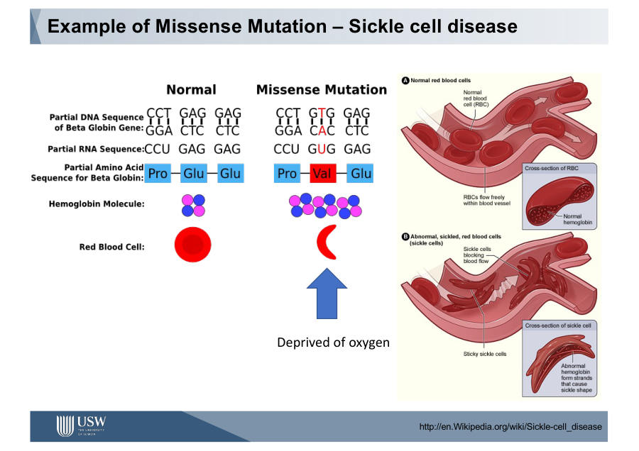
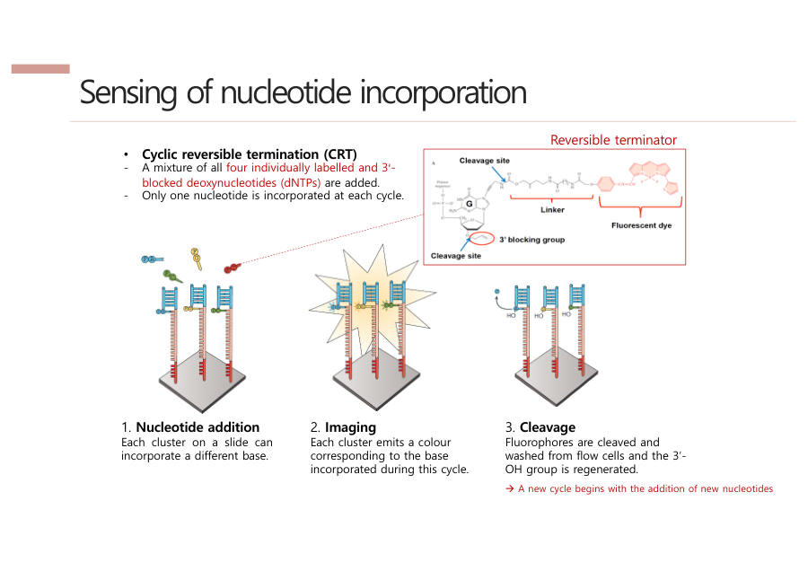

헤모글로빈 유전자에서 GAG(글루탐산) → GTG(발린) 글자 하나가 바뀜 → 적혈구가 낫 모양으로 찌그러짐 → 산소를 못 날라 빈혈.
글자 하나 → 아미노산 하나 → 단백질 모양 → 세포 모양 → 병. 센트럴 도그마가 어긋나면 병이 된다는 대표 사례.

교수님 슬라이드 — Sickle cell disease (Glu → Val)
글자 하나가 아니라 큰 덩어리가 바뀌는 건 구조 변이 — 결실·중복·역위·삽입·전좌.
2-8. SNP · SNV · 대립유전자
용어
쉬운 뜻
SNP Single Nucleotide Polymorphism
글자 하나 차이인데 많은 사람이 공유하는 흔한 차이. 눈 색깔 같은 개인차. 사람끼리 DNA는 99% 이상 같고, 약 0.1%가 달라요
SNV Single Nucleotide Variant
그냥 표준과 글자 하나가 "다르다"는 것 자체. SNP보다 넓은 말
대립유전자 allele
같은 자리에 올 수 있는 여러 버전. 예) 술 마시면 얼굴 빨개지는 버전 / 안 빨개지는 버전
BRCA1/2 — 종양억제유전자(브레이크). 망가지면 유방암 위험↑(100%는 아님). 안젤리나 졸리가 예방 수술을 받아 유명해졌어요. 리퀴드 바이옵시 — 피 한 방울 속 떠다니는 DNA로 암을 일찍 찾는 기술. 암 DNA 비율이 아주 낮아서 기계 실수(노이즈)에 묻히는 게 어려운 점 → 그래서 depth(5장)가 중요해요.
3장
NGS — 수억 조각을 동시에 읽는 기계 ★★★
교수님이 "NGS가 뭔가"를 시험 예시로 직접 말했어요. 이 장이 제일 중요해요.
📌 DNA 시퀀싱
DNA의 A·T·G·C 글자 순서를 읽는 것.
📌 NGS (Next Generation Sequencing, 차세대 염기서열 분석) — 이 문장을 외우세요
DNA 조각들을 유리판 위에 먼저 고정해 놓고, 글자를 하나씩 붙이면서(합성) 동시에 형광 사진을 찍어(Sequencing by Synthesis) 수억~수십억 개 조각을 한꺼번에(병렬로) 읽는 기술. 그 덕분에 비용이 확 떨어졌다.
3-1. 옛날 방식(Sanger) vs NGS
✍️ 비유
Sanger = 한 사람이 책을 한 줄씩 베껴 쓰기. 관(캐필러리) 하나에 한 종류만 → 동시에 약 20개.
NGS = 책을 잘게 찢어 운동장에 수억 장 깔아놓고, 드론이 위에서 한 글자씩 동시에 사진 찍기 → 동시에 약 10억(10⁹)개.
Sanger
NGS
순서
늘리기(Extend) → 관에 정렬(Arrange) → 읽기(Detect)
먼저 판에 고정(Arrange) → 늘리기와 읽기를 동시에
한 칸 크기
관 지름 약 1cm
점 하나 약 7μm
동시에
관 1개당 1종류
판 하나에 약 10⁹개
교수님 슬라이드 — Sanger(1 read/capillary) vs NGS(10⁹ reads/array)
3-2. 비용이 얼마나 떨어졌나
휴먼 게놈 프로젝트 — Sanger로 1990~2003년, 13년, 30억 달러 걸려 사람 게놈 하나를 읽었어요.
지금은 NGS로 한 사람 게놈이 약 200달러.
※ 녹취에서 "3조"라고 잘못 말한 부분이 있는데 자료 기준 30억 달러가 맞아요.
3-3. NGS가 읽는 원리 — SBS (Sequencing by Synthesis) ★★
두 단계로 기억하세요.
① 클론 증폭 (Clonal amplification) — DNA 한 가닥의 빛은 너무 약해요. 그래서 같은 조각을 약 1,000개로 복사해 한 점(클러스터)에 모아 빛을 키워요. → 비유: 혼자 손전등 켜면 안 보이니까 같은 반 친구 천 명이 같이 켜기
② 글자 붙이며 감지 (Sensing) — 한 사이클마다 글자 하나를 붙이고 형광 사진을 찍어 무슨 글자인지 봐요. 이걸 약 150번 반복.
읽는 길이·속도는 Roche가 더 좋았어요. 하지만 Illumina는 처리량이 압도적으로 커서 1Gb당 비용이 $7, Roche는 $9,500 — 1,000배 이상 쌌어요. 에러도 0.1%로 더 낮았고요. 연구비로 연구하는 사람들은 싼 쪽을 골랐고, Roche는 2016년 문을 닫았어요. Illumina 시장 점유율 약 70%.
"기술 혁신은 결국 비용과 연결된다"
교수님 슬라이드 — Roche "Shut down in 2016", Cost per Gb $9,500 vs $7교수님 슬라이드 — Bridge PCR: 유리판(flow cell) 위 클러스터 만들기

교수님 슬라이드 — CRT: ①글자 붙이기 ②사진 찍기 ③형광 잘라내기 → 반복4장
FASTQ — NGS가 뱉어낸 결과 파일 ★★★
📌 FASTQ
NGS 기계가 사진을 글자로 바꾼(base calling) 결과 파일. 조각(read) 하나가 4줄로 적혀요.
GWAS(Genome-Wide Association Study) — 환자군과 정상군을 비교해 병과 관련된 위치를 찾는 연구
교수님 슬라이드 — ANNOVAR DB별 질문 (이 변이 이름이 뭔가? / 일반인에게 흔한가? / 질병과 관련 있나?)
📝 시험에 이렇게 나와요
Q. 변이가 질병과 관련 있는지 확인하는 대표 DB는? → ClinVar
9장
암기 카드 — 약어 · 숫자 · 비교
교수님이 "GATK 이니셜이 뭔가" 같은 문제를 낸다고 했어요. 단답형 점수는 여기서 나와요.
9-1. 약어 풀네임 ★★★
약어
풀네임
한 줄
NGS
Next Generation Sequencing
대량 동시 시퀀싱
SBS
Sequencing by Synthesis
합성하며 동시에 읽기
PCR
Polymerase Chain Reaction
DNA 불리기
SNP
Single Nucleotide Polymorphism
흔한 한 글자 차이
SNV
Single Nucleotide Variant
한 글자 다름
Indel
Insertion + Deletion
삽입·결실
SNA
Single Nucleotide Addition
Roche 읽기 방식
CRT
Cyclic Reversible Termination
Illumina 읽기 방식
WGS
Whole Genome Sequencing
전체 읽기
WES
Whole Exome Sequencing
엑손만 읽기
SE / PE
Single-end / Paired-end
한쪽 / 양쪽 읽기
QC
Quality Control
품질 검사
BLAST
Basic Local Alignment Search Tool
옛 웹 얼라이너
BWA
Burrows-Wheeler Aligner
NGS용 얼라이너
SAM
Sequence Alignment/Map
얼라인 결과(글자)
BAM
Binary Alignment/Map
얼라인 결과(압축)
CIGAR
Compact Idiosyncratic Gapped Alignment Report
M·I·D·S 표기
MAPQ
Mapping Quality
제자리 확신도
IGV
Integrative Genomics Viewer
눈으로 보는 뷰어
BQSR
Base Quality Score Recalibration
품질 점수 재보정
GATK
Genome Analysis Toolkit
Broad Institute 변이 도구
HMM
Hidden Markov Model
PairHMM의 HMM
VCF
Variant Call Format
변이 목록
GVCF
Genomic VCF
모든 위치 포함
GT·DP·GQ
Genotype · Depth · Genotype Quality
VCF 칸
ANNOVAR
ANNOtate VARiation
변이 주석
GWAS
Genome-Wide Association Study
환자 vs 정상 비교
CpG
C-phosphate-G
C 다음 G, 메틸화 자리
hg19 / hg38
human genome 19 / 38
레퍼런스 버전
9-2. 외울 숫자
항목
값
사람 게놈
약 30억 염기쌍 · 유전자 약 2만 · 염색체 23쌍
사람 세포
약 30조 개
사람끼리 DNA 차이
약 0.1% (99% 이상 같음)
휴먼 게놈 프로젝트
1990~2003, 13년, 30억 달러
지금 한 사람 게놈
약 200달러
Phred
Q = −10log₁₀P · Q30 = 99.9% · Q40 = 99.99%
Illumina
길이 ~150 · 에러 0.1% · $7/Gb · 점유율 ~70%
Roche
길이 ~700 · 에러 1% · $9,500/Gb · 2016 폐업
Depth 기준
WGS 30x · WES 50~100x · Targeted 500x+ (암 ~3000x)
페어드엔드
2×150, 겹침 ~50
MAPQ
60 = 확실히 붙음
코돈
3글자 = 아미노산 1 · 아미노산 20종 · 시작 AUG · 끝 UAA/UAG/UGA
수소결합
G–C 3개, A–T 2개
클러스터
같은 조각 약 1,000개를 한 점에
9-3. 비교 한 줄 정리 (서술형 "차이를 쓰시오")
비교
한 줄
Sanger vs NGS
한 줄씩 하나씩 vs 판에 고정해 합성하며 동시에 사진, 대량 병렬
Roche vs Illumina
Emulsion PCR·SNA·긴 read vs Bridge PCR·CRT·초저가 → 비용으로 Illumina 승
Depth vs Coverage
한 자리를 몇 번 읽었나 vs 전체 중 몇 % 읽었나
SE vs PE
한쪽만 vs 양쪽 읽어 길고 정확하게
WGS / WES / Targeted
넓을수록 얕게, 좁을수록 깊게
FASTA vs FASTQ
정답지(이름+서열) vs 내 결과(4줄, 점수 포함)
SAM vs BAM
글자(큼) vs 압축(작음)
Global vs Local
전체 비교 vs 부분 비교(변이 찾기)
SNP vs SNV
흔한 개인차 vs 다른 것 전부
GVCF vs VCF
모르는 위치까지 전부 vs 확실한 변이만
침묵 / 넌센스 / 미스센스
같은 아미노산 / 종결 코돈 / 다른 아미노산
cutadapt vs Trim Galore
어댑터만 vs 품질까지 자동
히스톤 vs 메틸화
감긴 정도 vs C에 메틸기 — 둘 다 글자 안 바꾸고 ON/OFF
10장
B+ 필승 10문제 — 짧은 답 외우기
서술형은 정의 → 왜 → 예시/숫자 순서로 3문장만 쓰면 돼요. 아래 답을 소리 내어 읽고, 다음엔 가리고 써 보세요.
① NGS란 무엇인가?
DNA 조각을 판에 고정하고 염기를 하나씩 합성하면서 동시에 형광으로 읽는(SBS) 기술이다. 수억 개 조각을 병렬로 읽어 Sanger보다 훨씬 빠르고 싸다. 휴먼 게놈 분석 비용이 30억 달러에서 약 200달러로 떨어졌다.
② Illumina가 Roche를 이긴 이유는?
읽는 길이는 Roche(700)가 길었지만, Illumina는 처리량이 커서 1Gb당 $7로 Roche($9,500)보다 1,000배 이상 쌌다. 에러도 0.1%로 낮았다. 기술 혁신은 비용과 연결되고, Roche는 2016년 문을 닫았다.
③ Depth와 coverage의 차이, depth가 중요한 이유는?
Depth는 한 자리를 몇 개 read가 겹쳐 읽었나, coverage는 전체 중 한 번이라도 읽힌 비율이다. depth가 높으면 한 read의 에러를 다른 read들이 보완해 진짜 변이와 기계 에러를 구별할 수 있다. 100x 중 1개만 다르면 에러, 2x에서 1개 다르면 판단 불가다.
④ WGS, WES, Targeted의 차이는?
기계가 읽는 양은 정해져 있어 범위가 좁을수록 depth가 깊어진다. WGS는 전체 게놈 ~30x, WES는 엑손만 50~100x, Targeted는 특정 유전자 500x 이상이다. Targeted는 비율이 낮은 변이(암 조기진단)에 쓴다.
⑤ FASTQ 구조와 Phred 점수는?
read 하나가 4줄 — ID(@), 서열, +, 품질 점수. 품질 점수는 Q = −10log₁₀P로, Q30은 에러 1/1,000 = 정확도 99.9%다. 보통 Q30을 QC 기준으로 쓴다.
⑥ 페어드엔드의 원리와 장점은?
NGS는 한 번에 150~250글자만 읽으므로 조각 양쪽 끝에서 각각 읽고 겹치는 부분으로 이어붙인다. 장점은 더 길게 읽고, 뒤쪽 품질 저하를 반대쪽 read가 보완해 정확도가 오른다는 것이다. 2×150처럼 쓴다.
⑦ 얼라인먼트란? BWA가 빠른 이유는?
짧은 read가 레퍼런스 게놈의 어느 위치인지 맞추는 것이며, 위치를 알아야 변이를 찾을 수 있다. BWA는 레퍼런스를 미리 인덱싱하고, read의 짧은 seed로 후보 위치를 찾은 뒤 extend하므로 BLAST보다 빠르다.
⑧ MarkDuplicates의 이유와 생략하는 경우는?
PCR 증폭으로 같은 조각의 복사본이 생기면 변이 비율이 부풀려져(30%→80%) 잘못 판단한다. 무작위로 자른 DNA는 시작·끝이 같을 수 없으므로 같은 위치 read를 중복으로 보고 제거한다. 단 amplicon(targeted)은 원래 시작·끝이 같으므로 생략한다.
⑨ BQSR의 목적과 방법은?
기계 품질 점수의 bias를 보정해 에러를 변이로 오인하지 않게 하는 단계다. dbSNP 같은 알려진 변이 DB를 기준으로 보정 테이블을 만들고(BaseRecalibrator) 점수를 다시 쓴다(ApplyBQSR). 결과는 분석 준비가 된 final BAM이다.
⑩ Variant calling에서 중요한 것은? (HaplotypeCaller)
레퍼런스와 다른 곳 찾기(틀린 그림 찾기)는 쉽지만, 그중 진짜 변이일 확률을 계산하는 게 핵심이다. GATK HaplotypeCaller는 변이가 몰린 active region에서 haplotype 후보를 만들고 PairHMM·베이지안으로 확률을 계산해 확실한 변이만 VCF로 뽑는다.
10장
예상문제 전체 — 먼저 답 가리고 풀기
단답형
센트럴 도그마의 두 과정(DNA→RNA, RNA→단백질) 이름은?
아미노산 하나를 지정하는 염기 3개 단위는?
염기는 바뀌었지만 같은 아미노산을 만드는 돌연변이는?
사람 게놈은 약 몇 염기쌍인가?
NGS 핵심 원리 (영어 3단어)는?
FASTQ 한 read는 몇 줄이고 각 줄은?
Phred Q30의 정확도는?
보통 QC 통과 기준 점수는?
FASTQ 서열의 N은?
CIGAR 5M2I10M의 뜻은?
정렬된 BAM의 인덱스 파일 확장자는?
GATK의 풀네임과 만든 기관은?
VCF에서 GT가 0/0이면?
변이가 질병과 관련 있는지 보는 대표 DB는?
2×150의 뜻은?
BWA, SAM, BQSR, VCF의 풀네임은?
DNA 메틸화는 어떤 염기에 일어나나?
서술형
NGS가 무엇인지 Sanger와 비교해 설명하시오.
Illumina가 시장을 차지한 이유를 설명하시오.
Depth와 coverage의 차이와 depth가 중요한 이유를 쓰시오.
FASTQ에서 VCF까지 파이프라인을 순서대로 쓰고 각 단계 목적을 설명하시오.
read 뒤쪽으로 갈수록 품질이 떨어지는 이유와 대처법을 쓰시오.
어댑터 트리밍이 필요한 이유를 쓰시오.
GVCF와 VCF의 차이를 쓰시오.
DNA 메틸화가 유전자 발현을 조절하는 원리와 암과의 관계를 쓰시오.
겸상 적혈구 빈혈증을 예로 미스센스 변이를 설명하시오.
WGS·WES·Targeted, 페어드엔드, MarkDuplicates, BQSR, HaplotypeCaller → 앞 페이지 필승 10문제
10장
모범 답안
단답형
전사(transcription), 번역(translation)
코돈(codon)
침묵 돌연변이(silent mutation)
약 30억(3 billion)
Sequencing by Synthesis
4줄 — ID(@), 염기서열, +, 품질 점수
99.9% (에러 1/1,000)
Q30
염기를 판별하지 못한 자리
5개 매치, 2개 삽입, 10개 매치
.bai
Genome Analysis Toolkit, Broad Institute
변이 없음 (레퍼런스와 같음)
ClinVar
양쪽에서 150bp씩 읽는 페어드엔드
Burrows-Wheeler Aligner / Sequence Alignment/Map / Base Quality Score Recalibration / Variant Call Format
사이토신(C) — 주로 CpG 자리
서술형
18. NGS vs Sanger
DNA 시퀀싱은 ATGC 순서를 읽는 것이다. Sanger는 형광 염기가 붙으면 합성이 멈추게 해 길이가 다른 조각을 만들고, 관(캐필러리)에 흘려 짧은 것부터 읽는다. 관 하나에 한 종류라 동시에 몇십 개밖에 못 읽는다. NGS는 조각을 판에 먼저 고정(클러스터)하고 합성하면서 동시에 형광을 찍어(SBS) 약 10⁹개를 한꺼번에 읽는다. 그래서 비용이 30억 달러(13년)에서 약 200달러로 떨어졌다.
19. Illumina 승리 이유
→ 필승 ②번 답
20. Depth vs Coverage
→ 필승 ③번 답
21. 파이프라인 전체
① NGS로 FASTQ 생성 → ② QC(FastQC, Q30 기준 품질 확인) → ③ 트리밍(cutadapt로 어댑터·저품질 제거)·머지 → ④ 얼라인먼트(BWA로 레퍼런스 위치 찾기) → SAM → 정렬된 BAM + 인덱스 → ⑤ MarkDuplicates(PCR 중복 제거) → ⑥ BQSR(알려진 SNP 기준 품질 재보정) → ⑦ Variant calling(GATK HaplotypeCaller로 진짜 변이 확률 계산) → GVCF → VCF → ⑧ Annotation(ANNOVAR로 변이 의미 연결). FASTQ→BAM은 전처리, BAM→VCF는 변이 발견이다. 단계마다 IGV와 coverage·depth로 확인한다.
22. 뒤쪽 품질 저하
① 조각이 짧아도 기계는 150사이클까지 찍으므로 조각이 끝난 뒤엔 어댑터·노이즈를 읽는다. ② 사이클이 반복될수록 형광 노이즈가 누적된다. 대처는 트리밍과 페어드엔드(반대쪽 read로 보완)다.
23. 어댑터 트리밍 이유
인서트가 read 길이보다 짧으면 어댑터 서열까지 읽고 그 뒤는 노이즈가 된다. 이 부분은 레퍼런스에 없는 서열이라 얼라인먼트가 잘 안 되고 변이로 오인될 수 있다. 트리밍한 데이터가 얼라인율이 훨씬 높다.
24. GVCF vs VCF
GVCF는 판단할 수 없는 위치(<NON_REF>)까지 모든 위치를 기록하고, VCF는 확실한 변이만 기록한다. 보통 GVCF를 먼저 만들고 GenotypeGVCFs로 VCF를 추린다.
25. 메틸화와 암
DNA 메틸화는 사이토신(C)에 메틸기가 붙는 것으로 서열은 바뀌지 않는다. CpG가 몰린 CpG 아일랜드는 주로 프로모터에 있는데, 여기가 메틸화되면 전사인자가 못 붙어 유전자가 꺼진다. 암에서는 종양억제유전자 프로모터가 과메틸화되어 꺼지고, 전체적으로는 저메틸화가 나타난다.
26. 겸상 적혈구 (미스센스)
미스센스는 염기 하나가 바뀌어 다른 아미노산이 되는 점 돌연변이다. 헤모글로빈 유전자의 GAG(글루탐산)가 GTG(발린)로 바뀌어 적혈구가 낫 모양이 되고 산소 운반이 안 돼 빈혈이 생긴다. 센트럴 도그마의 한 지점이 어긋나면 질병이 된다는 예다.
11장
시험장에서 — 마지막 1장
✍️ 서술형 쓰는 공식
정의 → 왜(목적) → 예시·숫자
예) "Depth는 한 자리를 몇 개 read가 읽었는지다(정의). 높을수록 에러와 진짜 변이를 구별할 수 있다(왜). WGS는 30x, 암 조기진단은 3000x까지 올린다(숫자)."